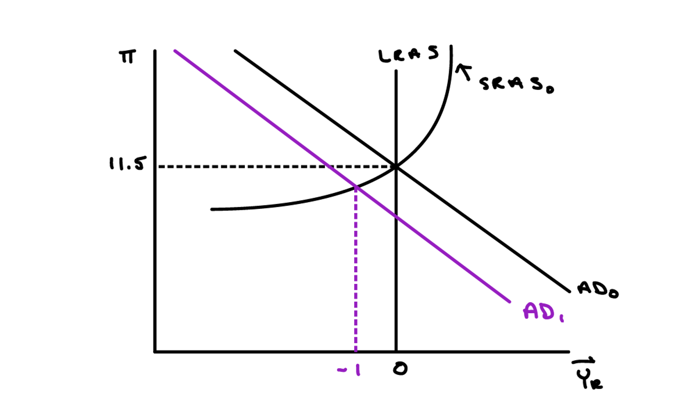
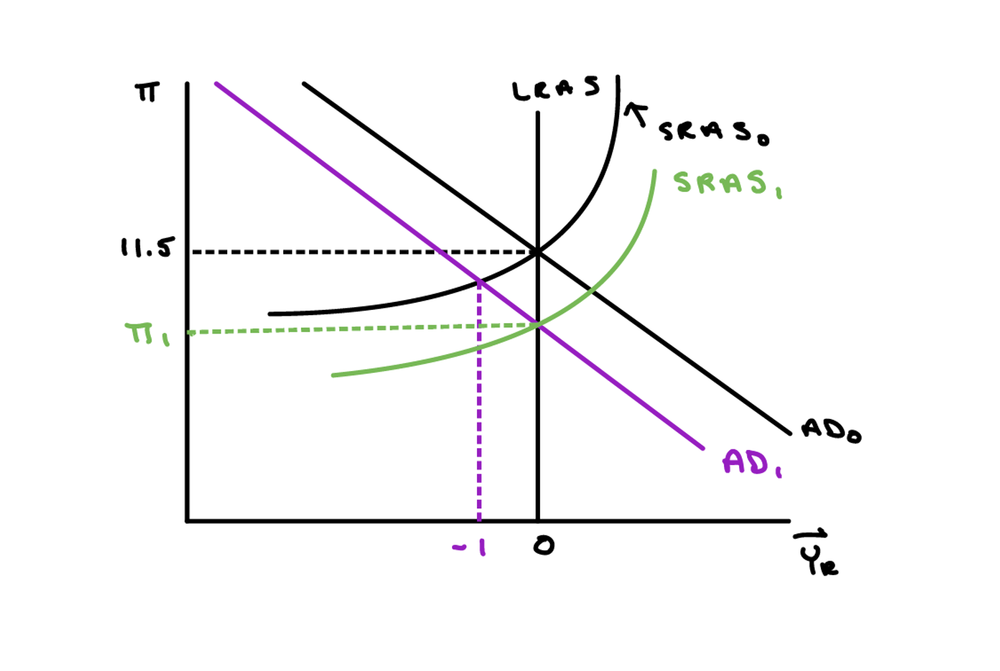

In 1979, the U.S. inflation rate was over 11%. The increase in inflation was due to a combination of events, including the expansionary policy of the Federal Reserve.
(a) Model the Late-1970s Equilibrium
Model the U.S. economy in the late 1970s by drawing an AD-LRAS-SRAS graph such that the actual inflation rate and expected inflation rate are both equal to 11.5% and real GDP growth is 0%.
Answer:
In the late-1970s:
- Inflation expectations \( \pi^e \) are anchored at 11.5% due to years of high inflation
- Actual inflation \( \pi \) is also 11.5% — expectations match reality
- Real GDP growth is 0% — the economy is at its potential output
- The economy is in long-run equilibrium with high inflation
- The AD and SRAS curves intersect at the LRAS

(b) Impact of Volcker's Contractionary Policy on Growth
In 1979, Paul Volcker was appointed chair of the Federal Reserve Board. He is widely credited with ending the high levels of inflation that the U.S. experienced during the 1970s and early 1980s by employing contractionary monetary policy. Given what you learned in class, what impact do you think Volcker's policy had on real economic growth in the U.S.? Show the impact that Volcker's policy had on real GDP growth in the graph that you drew above.
Answer:
Volcker implemented strong contractionary monetary policy by sharply reducing the money supply growth rate.
- This is a leftward shift of the AD curve from \( AD_0 \) to \( AD_1 \)
- The economy moves to a point where inflation remains elevated but real growth falls sharply
- In the short run, the economy experiences a recession
- Real GDP growth becomes negative (the economy contracts)
- This was a deliberate, painful policy choice to break the back of high inflation
Key Insight: There is a short-run trade-off between inflation and growth. Fighting inflation requires accepting lower growth/higher unemployment in the short run.

(c) Long-run Impact on Inflation Expectations and Disinflation
What impact do you think Volcker's monetary policy had on inflation expectations and actual inflation in the early 1980s? Use the graph that you drew in parts (a) and (b) to illustrate your answer.
Answer:
Over time, Volcker's sustained contractionary policy succeeded in reducing inflation expectations:
- As inflation remains lower for several periods, households and firms gradually revise expectations downward
- Workers accept lower wage growth; firms moderate price increases
- The SRAS curve shifts downward from \( SRAS_0 \) to \( SRAS_1 \)
- Actual inflation falls to \( \pi_1 \) (a lower level)
- Real growth gradually recovers toward potential as inflation expectations fall
- The economy transitions from the recession toward a new long-run equilibrium at lower inflation
Summary: Volcker's policy demonstrates how disinflation works in practice. In the short run, fighting inflation is costly in terms of lost growth and jobs (the recession of 1981-82). However, by maintaining the restrictive stance long enough to change inflation expectations, the economy eventually stabilizes at a lower inflation rate with restored growth. This highlights the importance of central bank credibility in anchoring expectations.

(d) The 2008 Housing Bust as a Demand Shock
When the housing bubble burst and "NINJA" loans began to default, trillions of dollars in household wealth evaporated. Using the AD—AS framework, describe the shift in the AD curve and explain why this led to a significant "recessionary gap" rather than just a simple drop in prices.
Correct Answer: Leftward shift of AD; Output falls due to "sticky" prices.
Rationale: The loss of trillions in wealth reduces consumption \( (C) \), shifting AD left. Because wages and prices are sticky and far from perfectly flexible, the economy moves down along the upward-sloping AS curve into a recessionary gap rather than immediately adjusting prices downward. This creates unemployment and lost output.
(e) The Role of Financial Intermediation
Christina Romer argues that the "cost of credit intermediation" rose in the 1930s due to bank failures. The 2008 crisis saw a similar "freeze" when the "Giant Pool of Money" stopped buying mortgage-backed securities. How does a disruption in the financial system's ability to link savers to borrowers affect the AD curve?
Correct Answer: Leftward shift of AD.
Rationale: A credit freeze or disruption in the "cost of credit intermediation" causes Investment \( (I) \) to plummet. Because businesses and consumers cannot access the global "Giant Pool of Money," total spending drops, shifting AD to the left. This mechanism independent of household wealth effects further depresses aggregate demand.
(f) Sticky Wages and the Upward-Sloping Supply Curve
Romer notes that while there is disagreement on why the AS curve is upward-sloping, most agree wages and prices are not perfectly flexible. If the AS curve were perfectly vertical (the Classical case), how would the collapse of the subprime mortgage market have affected the economy differently?
Correct Answer: Prices would drop, but output would remain the same.
Rationale: In a Classical model with a vertical AS curve, a drop in AD results only in immediate deflation. Real output \( (Y) \) would remain at the potential level because, in this theoretical case, there are no nominal rigidities to prevent instantaneous price adjustment. The economy would not experience a recessionary gap—only a lower price level.
(g) Policy Intervention and Recovery
Romer notes that the 1930s recovery was driven by a massive increase in the money supply (devaluation and gold inflows). If the Federal Reserve uses expansionary monetary policy to combat a contraction in the "Giant Pool of Money," which way does it intend to shift the AD curve, and what is the goal for real output \( (Y) \)?
Correct Answer: Rightward shift of AD; Increase real output \( (Y) \).
Rationale: Expansionary monetary policy increases the money supply, which lowers real interest rates. This stimulates Investment \( (I) \) and Consumption \( (C) \), pushing the AD curve back to the right to restore equilibrium at potential output. The goal is to offset the leftward shift caused by the financial crisis and return the economy to full employment.